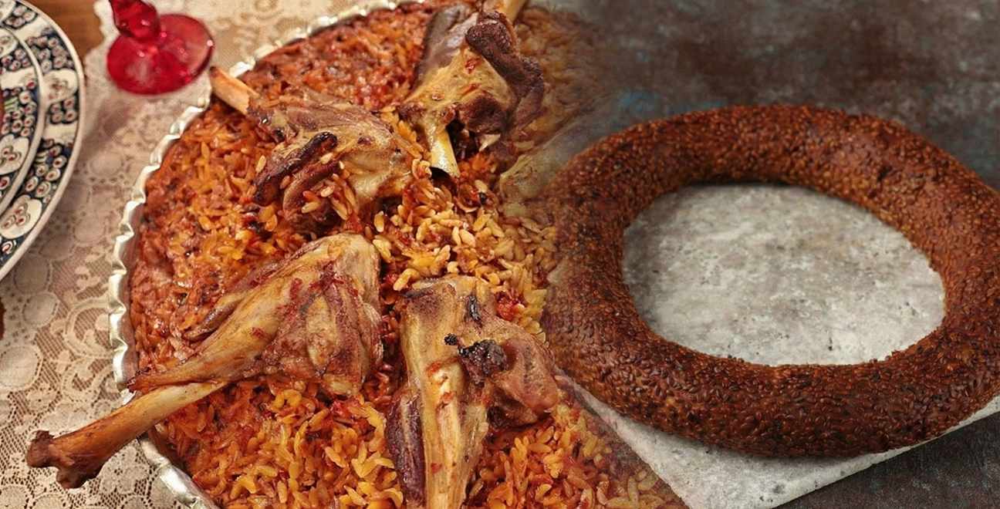

Ankara'nın
Mutfak Mirası
Simit'in çıtır sesi ile Tava'nın bereketli kokusu — Bozkırın iki efsane lezzeti

Ankara Simidi'ni diğer tüm simitlerden ayıran en temel özellik, daha ince, daha küçük ve çok daha çıtır olmasıdır. Bu simidin karakteristik koyu rengi ve kendine has aroması, hamurunun pişirilmeden önce pekmezli sıcak suya daldırılmasından (pekmezleme işlemi) gelir. Özellikle kaliteli üzüm pekmezi kullanılması, taş fırındaki odun ateşinde pişerken simidin dış yüzeyinin karamelize olmasını ve o meşhur çıtırtıyı kazanmasını sağlar.
Ankara'da bu kadar meşhur olmasının sebebi, şehrin bir "memur ve öğrenci kenti" olmasıyla doğrudan ilişkilidir. Sabah erken saatlerde işe veya okula yetişmeye çalışan binlerce insan için Ankara Simidi, en hızlı, en taze ve en ekonomik kahvaltı seçeneği haline gelmiştir. Kültürel değer açısından bakıldığında ise bu simit, Ankara'nın sokak dokusunun bir parçasıdır; vapurda simit yenen İstanbul'un aksine, Ankara'nın gri sabahlarında sıcak bir mola ve sosyal bir ortak noktadır.
Ankara Tavası, görünüş itibarıyla bir etli pilavı andırsa da aslında onu özgün kılan en büyük detay, pirinç yerine arpa şehriye ile yapılmasıdır. Geleneksel tarifinde kemikli kuzu eti, kendi suyunda ağır ağır pişirilir ve bu et suyu şehriyelerle buluşturulur. Şehriyelerin pirinç gibi tane tane dökülmesi değil, etin suyunu tamamen çekerek lokum gibi yumuşaması esastır. Bu yemek, Ankara'nın hayvancılık kültürünün, özellikle de meşhur Ankara Keçisi ve kuzu etinin bir yansımasıdır.
Bu yemeğin Ankara'da meşhur olmasının kökeninde, geçmişteki bağ evi kültürü ve toplu ziyafet gelenekleri yatar. Eskiden Ankara Tavası, "tava" adı verilen büyük kaplarda fırınlara gönderilir ve özellikle düğün, bayram ya da misafir ağırlama gibi özel günlerde bir dayanışma ve kutlama yemeği olarak sunulurdu. Kültürel değeri, kalabalık sofraları birleştirmesinden ve Ankara'nın tarım ile hayvancılığa dayalı kadim mutfak mirasını günümüze taşımasından kaynaklanır.
Ankara'nın mutfak mirasını keşfet — 10 soruyla bilgini sına!
Ankara lezzetlerini çok iyi öğrendin!